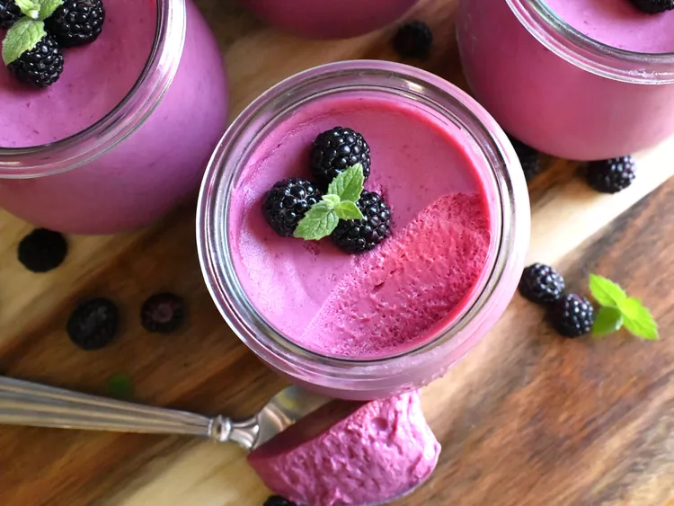

Wild Raspberry Mousse

Description
This wild raspberry mousse is light as air, slightly sweet, and very
berry-forward. If black raspberries are difficult to find, red
raspberries or blackberries make an excellent substitute.
Ingredients
- 3 cups fresh black raspberries
- 1/2 cup pure maple syrup, or to taste
- 1 tablespoon freshly squeezed lemon juice
- 1/2 teaspoon fresh lemon zest
- 1 pinch salt
- 1 1/4 teaspoons powdered unflavored gelatin
- 3 tablespoons cold water
- 1/2 cup plain whole milk Greek yogurt
- 1 1/2 cups heavy cream
- 1/2 teaspoon vanilla extract